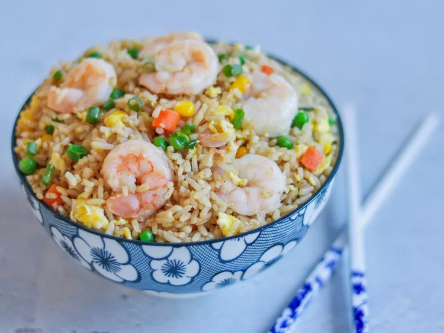

Easy Shrimp Fried Rice

Easy homemade shrimp fried rice with peas, carrots, garlic, and green onions. All my kids love this dish!
Make restaurant-worthy shrimp fried rice with this top-rated recipe.
Shrimp Fried Rice Ingredients
These are the ingredients you’ll need to make this shrimp fried rice recipe:
- Oils: This shrimp fried rice recipe starts with a mix of olive oil and sesame oil.
- Shrimp: A pound of peeled and deveined shrimp should be enough to make four servings.
- Frozen vegetables: Frozen peas, frozen carrots, and frozen corn add color and nutrients.
- Garlic: Take the flavor up a notch with two cloves of garlic (or more, to taste).
- Eggs: You’ll need three lightly beaten eggs for this shrimp fried rice recipe.
How to Make Shrimp Fried Rice
You’ll find the full, step-by-step recipe below — but here’s a brief overview of what you can expect when you make homemade shrimp fried rice:
- Cook the shrimp in oil, then remove from the pan and set aside.
- Add the frozen vegetables to the skillet and cook until they begin to soften.
- Add the garlic and cook until fragrant, then push the veggies to one side of the skillet.
- Scramble the eggs on the other side.
- Stir the shrimp, rice, and green onions into the skillet.
- Stir in the soy sauce and seasonings, then cook until the shrimp is reheated.